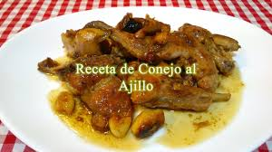

Conejo al Ajillo

Ingredientes:
- 1 conejo
- 1 cabeza de ajos
- Aceite
- Sal
- Vino
Elaboración:
Primero partimos el conejo en trozos pequeños y los ponemos a freir en un sartén con abundante aceite, a fuego lento. Le añadimos el vino y esperamos a que se dore.